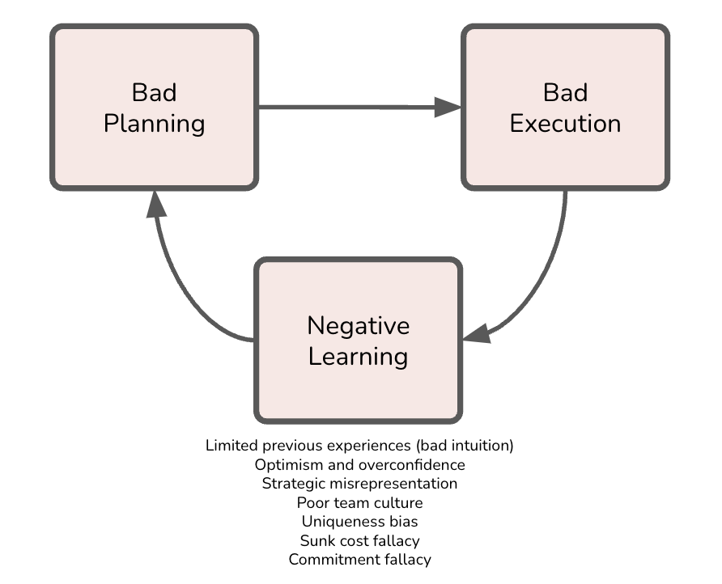
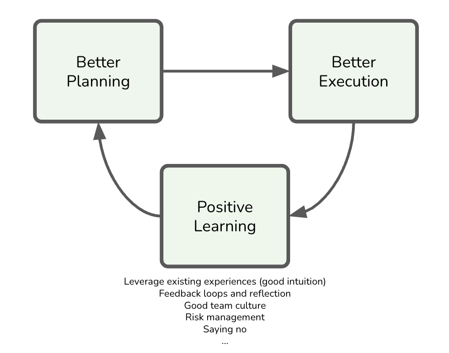

How Big Transformations Get Done: Learning From Mega-Projects
IN THIS SECTION, YOU WILL: Learn that IT transformation projects face similar challenges as other mega-projects, often failing due to cognitive biases and poor planning, but applying key lessons from successful projects—such as risk mitigation, modular design, and stakeholder engagement—can significantly improve their outcomes.
KEY POINTS:
- IT transformation projects are large-scale, multi-year endeavors that often aim for significant organizational changes, such as creating unified IT platforms after mergers, and they frequently face challenges similar to other mega-projects.
- Common cognitive biases and decision-making fallacies like overconfidence, strategic misrepresentation, and the sunk cost fallacy often derail these projects, leading to cost overruns, delays, and underperformance.
- Flyvbjerg and Gardner’s book “How Big Things Get Done” highlights lessons from successful and failed mega-projects across various industries, offering 11 practical heuristics for improving project leadership, including hiring the right experts, building modular systems, and focusing on risk mitigation.
- Key strategies for IT success include taking the outside view to learn from similar projects, fostering strong stakeholder relationships, and avoiding unnecessary complexity or scope creep by staying focused on core objectives.
Most IT transformations involve an immense, multi-year, multi-million-dollar project. Contrary to continuous improvements, IT transformation projects frequently aim to create significant organizational changes, such as creating a single IT platform after merging dozens of companies. Due to their size, IT transformation projects belong to the category of mega projects. They can benefit from lessons that other mega projects have learned.
For practical strategies on how to navigate these challenges, ‘How Big Things Get Done’ by Bent Flyvbjerg and Dan Gardner is an invaluable resource. This comprehensive exploration of large-scale projects not only identifies why they often fall short of expectations but also provides actionable steps to improve their success rates. Drawing from extensive research, real-world case studies, and psychological insights, the book offers a practical roadmap for better planning and execution, equipping people with the tools they need to succeed.
Flyvbjerg and Gardner discuss how project planners and stakeholders are often overly optimistic or intentionally misrepresent facts to win approval, leading to budget overruns and delays. Large projects like airports, bridges, and Olympic infrastructure are notorious for going over budget and time, just like many IT projects. Flyvbjerg and Gardner explore how human psychology affects decision-making and project outcomes. They underscore the importance of fighting cognitive biases and fostering a culture of honesty and transparency in project planning, making it clear that these values are not just desirable, but necessary for successful project outcomes.
The book is a treasure trove of examples from successful and failed projects across various industries, including technology, construction, and entertainment. Contrasting examples like the successful Pixar movie-making process with troubled infrastructure projects provides a comprehensive understanding of the factors that contribute to project success or failure, enlightening the reader and informing their future decisions.
The Iron Law of Mega-Projects
Flyvbjerg and Gardner define the iron law of mega-projects as follows: “Over budget, over time, under benefits, again and again.” These words resonate with the brutal reality of mega-projects. Put simply, the typical project is one in which costs are underestimated and benefits are overestimated. Picture a big project that costs more than it was supposed to and delivers less than expected. Flyvbjerg and Gardner analyze famous examples, such as the Sydney Opera House (ten years late and 1,357% over budget) and the Big Dig in Boston, (nine years late and 190% over budget) explaining why these problems are so widespread.
Here’s what the data shows from their study of 16,000 such projects:
- A mere 0.50% hit budget, time, and benefit expectations (or better)
- 8.50% meet both budget and time targets (or better)
- 47.90% manage to stay on budget (or better)
That is, sadly, typical. On project after project, rushed, superficial planning is followed by a quick start that makes everybody happy because shovels are in the ground. But inevitably, the project crashes into problems that were overlooked or not seriously analyzed and dealt with in planning. People run around trying to fix things. More stuff breaks. There is more running around. Flyvbjerg and Gardner call this the “break-fix cycle”, like a “mammoth stuck in a tar pit.” Several cognitive biases and decision-making fallacies often sabotage these efforts, leading to cost overruns, delays, and underperformance. All these factors together frequently lead to a negative learning loop (Figure 1): “The more you learn, the more difficult and costly it gets.”
 Figure 1: The negative learning loop behind many mega-projects.
For IT projects, Flyvbjerg and Gardner gave the following conservative estimates of base rates for cost risks based on their database of projects:
- Mean cost of overrun of IT projects is 73%
- 18% of IT projects belong to the long tail (>= 50% of overrun costs)
- Mean cost of overrun of IT projects in the long tail is 447%
This analysis means that even if you reserve an extra 100% of your planned budget for unforeseen problems, you still have a fair chance of ending up in the long tail, where costs could be arbitrarily high.
Let’s explore some of typical mega-project pitfalls:
- Optimism and Overconfidence (Hope Is Not a Strategy)
- Strategic Misrepresentation
- Bad Team
- Uniqueness Bias
- Lack of Experience (Eternal Beginner Syndrome)
- Sunk Cost and Commitment Fallacies
Optimism and Overconfidence
Leaders and stakeholders frequently overestimate their ability to deliver complex transformations. Flyvbjerg and Gardner’s key heuristic for managing optimism on projects is “You want the flight attendant, not the pilot, to be an optimist.”
It’s common for optimism and overconfidence to rear their heads in IT projects. Leaders and stakeholders may find themselves underestimating the complexity and risks involved. Here are some examples that you might find familiar:
-
Cloud Migration: A company migrating from on-premise servers to a cloud-based infrastructure may overestimate the skills of its engineering team, assuming they can handle the complexity without significant retraining. This assumption can lead to unexpected integration challenges, especially when dealing with legacy systems that were not designed for cloud environments. As a result, timelines get extended, budgets are exceeded, and operational disruptions occur during the migration process.
-
Microservices Refactoring: A software engineering team may decide to refactor their monolithic application into a microservices architecture, believing their existing codebase is stable enough to handle the transition seamlessly. They might overlook the technical debt accumulated in the monolithic system, such as tightly coupled components and poor documentation. This overconfidence in the system’s stability can lead to unforeseen challenges, like managing inter-service communication, increased latency, or scaling issues, which delay the project and inflate costs.
-
AI Deployment: In a project implementing AI or machine learning algorithms, a team might be overly optimistic about their ability to develop, train, and deploy the models effectively. They may ignore less predictable and the time-consuming processes of data cleaning and model validation, hoping the models will perform well immediately. This optimism can lead to delays when the models fail to deliver the expected results in production, forcing the team to go back and address foundational issues.
In all these cases, overconfidence can lead to a failure to properly assess risks and plan for the necessary resources, while optimism creates unrealistic expectations about timelines and project success. By underestimating early delays, leaders also fail to account for how delays compound over time, ultimately jeopardizing the entire project.
An interesting form of overconfidence is that early delays are not seen as a big deal by most project leaders. They figure they have time to catch up because the delays happen early. That sounds reasonable. But it’s dead wrong. Early delays cause chain reactions throughout the delivery process. The later a delay comes, the less work there is and the less the risk and impact of a chain reaction. For instance, if a database migration is delayed by a few weeks due to integration issues, project managers may downplay the impact, assuming future phases can compensate for the lost time. However, these early delays often create a chain reaction, pushing back testing, deployment, and training phases, resulting in even greater delays and increased costs down the line. Or, as US President Franklin Roosevelt said, “Lost ground can always be regained—lost time never.”
Strategic Misrepresentation
In some cases, leaders knowingly present overly optimistic forecasts to get funding approval or to gain executive buy-in. This strategy avoids rejection from stakeholders who may be wary of the true timeline and costs.

Here are some specific examples:
-
ERP System Overhaul: A transformation project leader might present a rosy forecast for a large-scale Enterprise Resource Planning (ERP) system upgrade, promising that it will be completed within a year. Knowing that typical ERP implementations involve complex integrations with legacy systems, data migration, and extensive testing, the leader may hide these challenges to avoid scaring off executive stakeholders with a more realistic multi-year timeline. As the project progresses, the team quickly runs into unforeseen challenges, like data compatibility issues or workflow changes, which lead to delays, budget overruns, and frustration from the IT team and the executives who feel misled.
-
Software Refactoring: A project manager might downplay the effort required to refactor a legacy system to make it more modular or scalable. They may minimize the technical debt associated with the old codebase—such as outdated libraries, hardcoded dependencies, or poor documentation—knowing that acknowledging these issues would require a larger budget and longer timeline. To secure immediate funding or developer resources, the manager assures leadership that the refactoring can be done quickly. However, as engineers dive into the project, they discover that cleaning up the technical debt is far more complex than expected, leading to missed deadlines, increased costs, and team burnout.
-
Cloud Migration Misrepresentation: A transformation project leader might promise that migrating a company’s IT infrastructure to the cloud will result in immediate cost savings and improved efficiency within six months, downplaying the complexities of migrating legacy systems, rearchitecting applications for cloud-native services and addressing security concerns. Knowing that a more honest projection—perhaps 18 to 24 months—might reduce executive enthusiasm for the project, the CTO strategically presents an overly optimistic view. As the project unfolds, unexpected integration challenges arise, such as ensuring data consistency across cloud and on-prem environments, leading to delays and escalating costs that eventually sour stakeholders on the project.
-
Cybersecurity Overhaul: An IT security leader might strategically underplay the scope of a cybersecurity overhaul, presenting the project as a relatively simple implementation of new tools, like firewalls and intrusion detection systems, while neglecting to mention the need for organization-wide security policy updates, employee training, and long-term monitoring. This underrepresentation might be used to secure quick buy-in from executives who are resistant to the idea of a larger-scale project. However, as the implementation begins, it becomes clear that these foundational changes are necessary, leading to scope creep, increased costs, and delays that frustrate both the project team and stakeholders.
In all of these cases, strategic misrepresentation might provide short-term benefits in the form of quick project approval and initial enthusiasm, but it sets the stage for long-term failure. Once the inevitable delays, cost overruns, and technical challenges surface, trust between leadership and the project team erodes, and the organization ends up paying a higher price—in both time and money—than if the project had been scoped and communicated accurately from the start.
Poor Team Culture
A strong, cohesive team is essential in mega-projects, where complexity and stakes are high. A lousy team not only undermines performance but also magnifies risks, leading to cascading failures that jeopardize the entire project’s success. In IT mega-projects a bad team can have severely negative impacts, amplifying the inherent complexities and risks.
When team members are disjointed, unmotivated, or lack trust in one another, several issues arise that can derail the project:
-
Poor Communication and Collaboration: A lack of cohesion in the team leads to miscommunication, misunderstandings, and siloed efforts. This results in inefficient workflows, duplicated work, and critical information being missed or ignored, causing delays and costly rework.
-
Low Morale and Disengagement: When team members do not feel empowered or connected to a shared goal, they become disengaged and less committed. This disengagement can lead to poor decision-making, suboptimal performance, and a lack of accountability, which in turn increases the likelihood of errors and project delays.
-
Inconsistent Quality and Execution: A poorly structured team will struggle to maintain consistent work standards. Without a unified approach, varying levels of expertise and different working styles can create gaps in quality, leading to technical debt, integration issues, and unreliable systems that require additional time and resources to fix.
-
Increased Conflict and Blame Culture: When team members are not aligned, conflicts over priorities, responsibilities, and blame for failures arise. This misalignment further damages morale slows decision-making and distracts from the core objectives, exacerbating delays and overruns.
-
Failure to Adapt to Challenges: A dysfunctional team is less likely to adapt to inevitable project challenges, such as scope changes or unexpected technical issues. Without trust and a shared commitment to problem-solving, the team may be slow to respond to setbacks, resulting in missed deadlines, increased costs, and project failure.
Here are specific examples in IT projects where a bad team can severely impact execution:
-
Cloud Migration Project: In a large-scale cloud migration project, where multiple teams (networking, security, application development, and operations) must work together, poor communication can lead to critical gaps. For example, if the networking team does not correctly communicate firewall rules and IP whitelisting requirements to the operations team, the migrated applications might fail to connect to necessary resources, leading to significant downtime and troubleshooting. If different teams use inconsistent approaches for migrating workloads (e.g., one team optimizes for performance while another focuses on cost), the result can be a fragmented cloud architecture, with some applications running smoothly and others facing performance bottlenecks or security vulnerabilities.
-
Microservices Architecture Refactor: In a project to refactor a monolithic application into microservices, team members may resist change due to the complexity and additional workload. If developers feel unsupported or disconnected from the project’s vision, they may not fully commit to learning new frameworks or technologies required for microservices. This situation can result in poorly designed services with limited scalability and high maintenance costs. Microservices require teams to adopt DevOps practices like continuous integration/continuous deployment (CI/CD). If the team is dysfunctional and does not fully embrace these practices, deployments may become manual and error-prone, leading to frequent downtime and slower release cycles.
-
Data Warehouse Implementation: Conflicts can arise between data teams in a data warehouse project that consolidates data from multiple departments. If there is no alignment on data governance and standards, teams might blame each other for data inconsistencies or performance issues. For instance, the finance team may report issues with slow queries. In contrast, the engineering team insists that the database schema is not the problem, resulting in a standoff and no resolution. Different teams may load data into the warehouse with inconsistent validation checks. This inconsistency leads to corrupted or duplicate data, causing critical business reports to be inaccurate. Fixing these data quality issues after deployment would require additional resources, delays, and erode stakeholder trust in the system.
-
Agile Transformation for Software Development: In an Agile transformation project, if teams do not trust or fully adopt Agile principles, such as frequent feedback loops and iterative development, they may revert to old habits of waterfall planning. This results in poor responsiveness to changing business needs missed sprint goals, and an inability to deliver incremental value. Agile ceremonies like sprint reviews or retrospectives without cross-functional collaboration become box-ticking exercises rather than meaningful ways to improve the process. Agile transformations require a shift in mindset. However, team members may become disengaged if the team feels that management is only paying lip service to the principles without making fundamental organizational changes (like reducing micromanagement). Disengaged teams miss opportunities to optimize workflows, introduce better tools, and improve velocity, ultimately stalling the transformation effort.
-
Custom CRM System Development: In a project to build a custom CRM system for a large organization, poor collaboration between frontend and backend teams can result in misaligned system design. For example, the backend team might design inefficient or difficult APIs for the frontend team to use, causing delays in integration and forcing the frontend team to write additional code to make the system work as intended. If the development team lacks a unified testing strategy, some features may be well-tested while others contain bugs or performance issues that go unnoticed until production. This lack of strategy leads to frequent bug fixes post-launch, which frustrates users and increases long-term maintenance costs.
-
Cybersecurity Implementation in a Financial Institution: In a cybersecurity overhaul, if the security team is not aligned with the development and operations teams, each group may prioritize its own tasks over shared security goals. For example, the development team might push out new features without proper security reviews, blaming the security team for delays, while the security team blames developers for introducing vulnerabilities. This conflict creates gaps in the system, exposing the organization to potential data breaches or compliance failures.
In these examples, a lousy team dynamic, characterized by poor communication, lack of engagement, inconsistency, and conflict, amplifies risks and delays in IT mega-projects. These issues affect technical outcomes and strain budgets, timelines, and stakeholder confidence.
Uniqueness Bias
Uniqueness bias means people see their projects as unique, one-off ventures with little or nothing to learn from earlier projects. If you imagine that your project is so different from other projects that you have nothing to learn from them, you will overlook risks you would catch and mitigate if you switched to the outside view instead.
IT transformations are often seen as unique by those executing them, leading to a reluctance to learn from other industries or similar projects. However, the reality is that lessons from other sectors, such as construction or film production, can be valuable. Here are some examples of how this bias plays out and its consequences:
-
Custom Enterprise Solution Development: A company developing a custom enterprise resource planning (ERP) solution might believe its specific business processes are so unique that it cannot use existing frameworks or off-the-shelf solutions. As a result, the company might build the entire solution from scratch rather than adopting and customizing proven ERP systems. This “reinventing-the-wheel” approach leads to unnecessary complexity and development delays. Established ERP systems often have pre-built modules for common business processes (finance, HR, supply chain), and trying to recreate these from scratch introduces risks of inefficiencies, bugs, and a longer time to market. By failing to learn from existing systems, the company overlooks best practices in data management, integration, and compliance, increasing the risk of costly rework or system failure.
-
Cloud Migration Project: During a cloud migration, IT leaders might believe that their company’s legacy systems and data architecture are so unique that they require a completely custom approach to the cloud strategy. This view leads them to ignore established cloud migration frameworks or case studies from other industries that have faced similar challenges. By not learning from similar cloud migrations, the team may overlook common risks, such as data migration errors, service downtime, or security vulnerabilities. Established frameworks, like those provided by cloud service providers (AWS, Azure), offer proven processes for phased migration, testing, and scalability. Still, a team with a uniqueness bias might dismiss these, leading to project delays and potential operational disruptions.
-
DevOps Implementation: A software engineering team tasked with implementing a DevOps pipeline might believe their existing software development environment is so specialized that common DevOps tools and practices won’t work. They might create custom deployment and testing pipelines, ignoring widely adopted tools like Jenkins, Docker, or Kubernetes. Building custom solutions increases the project’s complexity and adds long-term maintenance costs. Commonly used DevOps tools are battle-tested, scalable, and come with extensive community support. By rejecting these tools, the team risks developing systems that are less reliable, more challenging to scale, and more costly to maintain, all of which could have been avoided by adopting industry-standard solutions.
-
Security Overhaul in a Financial Institution: A financial institution undergoing a cybersecurity overhaul might view its security needs as so unique due to regulatory requirements that it avoids using best practices or tools that have been widely adopted in the industry. Instead, they may build custom security protocols or ignore lessons learned from other institutions’ security breaches. This decision could lead to increased vulnerability to attacks or compliance failures. Lessons from other industries, such as incident response plans, network segmentation, or automated threat detection, would provide a robust framework for addressing risks. By failing to learn from others, the institution might introduce avoidable weaknesses into its security system, making it more prone to breaches or compliance penalties.
-
Overlooking Project Management Practices: A large-scale software engineering project might view itself as fundamentally different from other industries, such as construction or manufacturing, dismissing project management practices commonly used in those sectors. Teams might underestimate the value of phased delivery, risk management frameworks, or using a project’s “critical path” to prioritize tasks. Ignoring lessons from other fields, the team fails to implement effective risk mitigation strategies, leading to unexpected scope creep, budget overruns, and delays. In contrast, large infrastructure projects often use planning techniques that account for risks and dependencies, allowing for better control of timelines and costs. Adopting similar methodologies could help IT teams manage complexity and reduce uncertainty.
In each of these cases, uniqueness bias prevents teams from benefiting from proven strategies and lessons learned in similar or even unrelated fields. By adopting the outside view and learning from both similar IT projects and other industries, teams can avoid common pitfalls, reduce risk, and improve project success rates.
Lack of Experience (Eternal Beginner Syndrome)
When an organization embarks on its first large-scale IT transformation, it often lacks experience in managing complex systems and technologies. This lack of institutional memory leads to repeated mistakes that more experienced teams could have avoided. For instance, in an IT architecture overhaul, the team might struggle to implement a scalable infrastructure due to poor planning or inadequate tools despite established best practices in the industry. In software engineering, teams might make the same coding mistakes, like inadequate version control or failure to manage dependencies properly, because they lack a disciplined software development lifecycle (SDLC).
Here are some examples illustrating this issue:
-
IT Architecture Overhaul: A company undergoing its first IT architecture overhaul to implement a microservices-based architecture may lack experience in designing scalable systems. The team might underestimate the complexity of decoupling tightly integrated legacy systems, failing to plan for key elements such as inter-service communication, data consistency, and fault tolerance. Without adequate planning and knowledge of best practices, the company may end up with a fragile architecture that suffers from frequent outages or performance bottlenecks. Experienced teams would have anticipated the need for load balancing, service discovery, and failure recovery mechanisms, but the lack of experience leads to significant downtime and costly rework to stabilize the system.
-
Data Migration to the Cloud: A company with no prior experience in cloud migration may attempt to move its entire on-premise data infrastructure to a cloud provider without fully understanding the implications of bandwidth constraints, data security requirements, or cloud-native application design. They might fail to implement proper backup strategies or to account for the potential latency issues with large datasets. The lack of experience leads to failed migrations, with critical data being lost or corrupted in the process. Additionally, unoptimized applications and data structures cause excessive cloud costs and slow performance. These issues could have been mitigated with a more experienced approach, such as phased migration, cost management tools, or cloud optimization practices.
-
DevOps and CI/CD Implementation: An organization attempting to adopt DevOps practices for the first time might struggle to establish continuous integration (CI) and continuous deployment (CD) pipelines due to a lack of familiarity with the necessary tools and automation. They may fail to properly set up test automation, monitoring, or infrastructure as code (IaC). Without a clear understanding of DevOps principles, the team ends up with manual deployment processes prone to human error, resulting in slower releases, frequent production issues, and high maintenance costs. Experienced teams would have prioritized automating the build, test, and deployment processes, ensuring more reliable and faster iterations.
-
Security and Compliance in IT Systems: A company handling sensitive customer data for the first time might lack the necessary experience to implement proper security and compliance protocols, such as encryption, role-based access control, or regular security audits. The lack of institutional knowledge on data protection leads to significant vulnerabilities, exposing the organization to data breaches or non-compliance with regulations like GDPR or HIPAA. Experienced teams would have implemented security best practices from the outset, ensuring that data is protected and compliance requirements are met.
-
Technical Debt Accumulation: Inexperienced teams might focus on short-term goals and quick feature releases without considering long-term scalability or maintainability. As a result, they accumulate significant technical debt with complex, poorly documented code that is difficult to maintain or extend. This technical debt slows down future development and increases the likelihood of bugs and system crashes, as the underlying infrastructure is not built to handle new demands. More experienced teams would have balanced feature development with addressing technical debt, ensuring that the codebase remains maintainable and scalable.
In these examples, Lack of Experience and Eternal Beginner Syndrome leads to costly mistakes and delays. Organizations embarking on their first IT transformation often overlook best practices and proven methodologies, resulting in inefficiencies, poor performance, and technical failures. Organizations can avoid these repeated mistakes by learning from more experienced teams or consulting external experts and achieving more successful outcomes.
Sunk Cost and Commitment Fallacy
The Sunk Cost Fallacy and Commitment Fallacy are closely related cognitive biases that lead decision-makers to continue investing in a project, often well past the point of viability, to justify previous investments or out of reluctance to admit failure. Together, they create a cycle of sustained investment in projects that may be outdated, inefficient, or otherwise unworkable.
The Sunk Cost Fallacy occurs when organizations persist in allocating resources—time, money, or effort—based on what has already been invested rather than the project’s current and future benefits. Meanwhile, the Commitment Fallacy or Commitment Bias arises when decision-makers feel compelled to push forward with a failing initiative, fearing that abandoning it would mean admitting defeat or wasting prior commitments. This push often results in quick “lock-in” decisions that overlook alternatives and elevate project risk.
Here are examples of how these biases manifest:
-
Custom Data Warehouse vs. Cloud Solutions: A company may continue investing in a costly, on-premises data warehouse, even when cloud-based solutions offer better performance and scalability. The justification lies in the large initial investments in infrastructure, which overshadow the inefficiency and higher maintenance costs compared to cloud alternatives. Instead of shifting to a cloud solution, the company experiences mounting operational inefficiencies.
-
Legacy Codebase in Obsolete Languages: A software team may continue enhancing an outdated codebase due to the significant resources already spent on development and training. Despite modern frameworks offering greater ease of maintenance and scalability, the team resists change, ultimately leading to a bloated, hard-to-maintain system that falls behind in performance.
-
Over-customized ERP Systems: Companies that heavily customize ERP systems to fit their needs face issues when updates or integrations become difficult. Despite the challenges and escalating costs, they continue investing in these customizations due to prior investments, ultimately impeding the company’s flexibility and competitiveness compared to more adaptable ERP options.
-
In-house Software vs. Off-the-Shelf Solutions: Companies often invest in building custom solutions when off-the-shelf options are available. Even as maintenance becomes costly and new features are slow to implement, they avoid switching because of prior development costs, risking inefficiency and missed opportunities to streamline operations.
These fallacies lead to several detrimental impacts:
- Inefficient Resource Use: Continued investment in outdated or failing projects wastes valuable resources.
- Increased Project Risk: Projects suffer from technical debt, rigidity, and escalating costs that increase long-term risks.
- Missed Opportunities: By resisting modern, flexible solutions, companies miss out on enhanced scalability, cost savings, and competitive advantage.
To avoid these biases, organizations should adopt a data-driven approach that includes regular, objective reassessments of projects based on current value and future potential, not past investments. This approach can enable timely pivots to alternative solutions, reducing long-term costs and fostering innovation. Recognizing when to re-evaluate, abandon, or adapt projects is essential for sustainable growth and competitiveness.
Heuristics for Successful Mega-Projects
Cognitive biases and fallacies represent a significant risk in IT transformations. Overcoming them requires rigorous active planning, the willingness to learn from other industries and past mistakes, and a focus on making data-driven decisions. Successful IT transformations often involve transparency, adaptability, and a willingness to pivot when necessary rather than sticking to flawed assumptions, unrealistic optimism, or sunk investments.
Flyvbjerg and Gardner do not only analyze projects but have identified 11 heuristics for better project leadership:
- Hire a Masterbuilder
- Get Your Team Right
- Ask Why
- Build With Lego
- Think Slow, Act Fast
- Take The Outside View
- Make Friends and Keep Them Friendly
- Watch Your Downside
- Know That Your Biggest Risk Is You
- Say No and Walk Away
- Build Climate Mitigation Into Your Project
These techniques can set a project on the right path, creating a positive learning loop that pushes projects forward and improves over time.
 Figure 2: The positive learning loop.
Hire Experienced Masterbuilders
In any complex IT project, whether designing a new system, migrating to the cloud, or building a software platform, having exemplary leadership can make or break the effort. Flyvbjerg and Gardner claim that hiring a master builder—with deep expertise and hands-on experience—should be your top priority. The term originates from the skilled masons who built Europe’s medieval cathedrals, individuals with both the vision and the practical knowledge to bring massive, intricate projects to life. In today’s world, it means finding someone with a track record of successfully leading similar IT initiatives.
It is important to understand what Flyvbjerg and Gardner mean by a master builder. I interpret their heuristics for a master builder as someone who isn’t necessarily controlling every detail upfront but rather someone who has relevant experience and can lead change effectively, ensuring the project evolves successfully in real-time while balancing both strategic and operational priorities. A master builder is not necessarily a top-down architect who rigidly controls every aspect of a project. Instead, a master builder can be any key figure who knows how to drive change in an unpredictable, complex environment. This role is less about dictating every decision and more about enabling the project to adapt and succeed amidst constant flux, instilling confidence in the team and stakeholders.
In IT projects, a master builder could be a Chief Technology Officer (CTO), Chief Product Officer (CTO), a Chief Architect, a Senior Product Manager (or a team of them)—any senior leader with strong, relevant experience, the deep expertise and strategic vision required to steer the team through unforeseen challenges. They don’t merely impose a rigid vision; they understand the technical and business intricacies, foresee potential risks, and know how to pivot when things don’t go as planned. Essentially, they act as adaptive leaders who empower their teams and navigate uncertainty, keeping the project aligned with its goals while responding to emerging challenges.
For instance, if you’re overseeing a major system integration, your master builder might be a seasoned CTO, chief architect, or principal engineer who’s navigated the complexities of combining legacy systems with modern cloud services. They’ll know the potential pitfalls—like data migration challenges or API compatibility issues—and how to avoid them. Their domain experience allows them to anticipate risks, adapt to changes, and keep the project on track.
But, as you may have experienced, master builders aren’t always available or affordable, especially for smaller projects or organizations with limited budgets. If that’s the case, you’ll need to think creatively. You might look for someone with solid expertise but lacks the full experience of a master builder. In this case, you’ll want to build a strong support network around them, such as hiring subject matter experts to supplement their knowledge or bringing in external consultants for critical phases of the project.
Another option is to foster internal talent by investing in mentorship and training. With the proper guidance, you may have rising stars on your team who can step into a master builder role. Over time, you build the expertise you need internally by allowing them to lead smaller projects or shadow more experienced colleagues.
In any case, whether you hire an established expert or grow your own, the key is to ensure that someone with deep domain knowledge is at the helm of your project. The master builder has the practical wisdom to ensure your project’s success, guiding it through the technical and managerial challenges that inevitably arise.
Get Your Team Right
This heuristic is the one that every successful project leader will tell you is non-negotiable: Get your team right. As Ed Catmull, co-founder of Pixar, wisely said, “Give a good idea to a mediocre team, and they will screw it up. Give a mediocre idea to a great team, and they will either fix it or come up with something better. If you get the team right, chances are they will get the ideas right.” This statement holds especially true in IT, where complex systems, evolving technologies, and tight deadlines make teamwork essential to success.
But who should assemble the team? Ideally, this should be the responsibility of a master builder. Picking the right team is arguably the master builder’s most important job. Whether you’re building a new cloud infrastructure, implementing a security overhaul, or leading a software development project, the right team can overcome technical obstacles, innovate on the fly, and adapt to changing requirements.
In IT projects, the master builder’s role is far from solitary. It’s their deep expertise and leadership that sets the tone, but it’s the team that delivers the project. For example, when designing a distributed architecture, the master builder would bring together the right mix of cloud architects, developers, DevOps engineers, and security experts, ensuring that someone fills each role with the technical skills and collaborative mindset to succeed. A well-assembled team has the technical chops and the ability to work together smoothly, troubleshoot issues, and stay focused on the project’s overarching goals.
Let’s take an example in software engineering: You may have a brilliant principal engineer (the master builder) who can architect an elegant solution. However, if the team around them lacks the necessary talent in areas like front-end development, API integration, or QA testing, the project is likely to fall short. The master builder’s real genius lies in their technical knowledge and ability to pick, mentor, and manage a team that works together cohesively toward the project’s success.
What if a master builder isn’t available? In that case, the project manager needs to focus on team composition. They must evaluate not just each member’s technical skills but also how well those individuals collaborate. In IT, a team that communicates well and adapts to new challenges will far outperform one technically brilliant but siloed or resistant to change.
Remember, teams, not individuals, deliver projects. So, to amend the earlier advice: When possible, hire a master builder—and the master builder’s team. Their combined expertise, working in sync, will ultimately drive your project to success. Even when faced with a less-than-perfect plan, a great team can adapt, innovate, and deliver far beyond expectations.
Ask Why
Asking why you’re doing your project is one of the most powerful ways to stay focused on what really matters—your ultimate purpose and the desired result. IT projects often get bogged down in technical details, changing requirements, or unforeseen obstacles, constantly returning to the core “Why?” keeps you grounded in the bigger picture. This overarching goal should be placed in the metaphorical “box on the right” of your project plan—a constant reminder of the result you’re striving for.
For example, if you’re leading a project to migrate systems to the cloud, the ultimate purpose is improving scalability and reducing operational costs. As the project progresses and technical challenges arise—such as data migration delays, compatibility issues, or security concerns—it’s easy to get lost in the details. But a strong leader continuously asks, “Why are we doing this?” If your actions, resources, or decisions don’t contribute directly to achieving the project’s purpose, they need to be reconsidered.
For instance, when implementing a microservices architecture, getting caught up in the technical nuances of service design, API management, or deployment pipelines is easy. However, if the ultimate goal is improving system flexibility and development speed, you must evaluate every technical decision against that goal. This strategic evaluation ensures that every technical decision is goal-oriented and contributes directly to the desired outcome.
Asking “Why?” It can also help you prioritize features and manage scope creep. As your project evolves, stakeholders may request additional features or changes. Before agreeing to any modification, ask, “Why is this necessary?” And “Does this change help achieve the primary goal?” If the answer is no, it may be best to push back or deprioritize the request in favor of what drives the project toward success. This approach gives you a sense of control and decisiveness in managing the project’s scope.
By continuously asking “Why?” throughout the life of your project, you ensure that every decision and every action is contributing to the ultimate result. This helps you stay focused on delivering value and prevents you from getting sidetracked by details that don’t serve the bigger picture.
Build With Lego
Big is best built from small. Just like how a towering wedding cake is essentially a stack of smaller cakes, many large-scale projects in IT and engineering are constructed from simple, repeatable building blocks. This modular approach allows you to scale systems efficiently, getting better, faster, and cheaper as you grow. Think of each small unit as a Lego brick—a fundamental building block that, when replicated, creates something far more powerful.
In IT, this principle is at the core of many successful architectures. For instance, consider server farms: the server is the Lego brick. A data center isn’t a massive, monolithic structure; it’s a collection of individual servers stacked and connected in ways that allow them to scale up or down as needed. Similarly, in cloud computing, virtual machines or containers act as Lego bricks, providing modular, repeatable computation units that can be easily replicated or distributed across a global network.
The same idea applies to microservices architecture in software development. Instead of building one massive, monolithic application, you create a series of small, independent services that communicate with each other. Each microservice is a Lego brick—focused, self-contained, and scalable. If one service needs to handle more traffic, you can scale it independently without affecting the rest of the system. This modular approach makes your application more flexible, maintainable, and easier to scale.
This idea isn’t limited to software and server architecture. Take infrastructure as code (IaC)—where you define your IT infrastructure using code templates, automating the setup and deployment of systems. Each piece of infrastructure—a network configuration, a virtual machine, or a storage unit—can be considered a Lego brick. With IaC, you can deploy, replicate, and scale your infrastructure quickly and consistently by reusing and stacking these blocks.
Modularity also applies to software development processes. Agile methodologies break down considerable development efforts into small, manageable sprints, where teams build, test, and release incremental pieces of functionality. Each sprint is like adding another Lego brick to your larger product, allowing continual improvement and flexibility.
This approach has been successfully applied beyond IT—whether in solar farms (where each solar panel is a building block), in shipping (where containers are standardized units), or even in education (where modular learning systems allow customization and scalability). Its applicability is only limited by imagination.
Building your systems, software, or infrastructure with Lego-like components creates the flexibility and scalability needed for long-term growth. Each piece is small, manageable, and optimized independently, but they form something much more significant together. The beauty of this approach is that it’s not only scalable but adaptable to changes and innovations, allowing you to improve incrementally as your needs evolve.
Think Slow, Act Fast
Taking the time to plan thoroughly is crucial because the stakes during execution are much higher. As the saying goes, “measure twice, cut once.” What’s the worst that can happen during planning? You may lose some code snippets or adjust the project roadmap. But what’s the worst that can occur during delivery? Your data migration corrupts critical information, causing system-wide failures. Your untested API causes a security breach—your cloud infrastructure crashes during peak demand, costing millions in downtime. Almost any nightmare scenario can happen—and has happened—during delivery. That’s why it’s essential to limit your risk exposure.
You do this by thinking slowly during the active planning phase. In this stage, the cost of reworking a system design or rethinking your technology choices is relatively low. You can test ideas, simulate failures, and anticipate potential issues with little consequence. Thinking through every detail—designing the architecture for a new platform, setting up cloud infrastructure, or defining security protocols—pays off massively when it’s time for action.
Again, it is essential to understand what Flyvbjerg and Gardner mean by thinking slowly. Planning and thinking slowly is neither a theoretical exercise nor a traditional waterfall approach where you decide everything up front without room for adjustment. Instead, it’s a practical, iterative, and dynamic process that involves experimenting, simulating, exploring, and doing everything necessary to clarify your roadmap, reduce risks, and minimize surprises. In IT architecture and software engineering, this means testing different approaches, running simulations to expose potential failures, and experimenting with configurations to see what works best. The goal is to refine your strategy and eliminate uncertainties before you hit the high-stakes phase of full-scale delivery.
Unlike rigid waterfall planning, this approach encourages continuous feedback, real-time learning, and adaptability. For example, in planning a system migration or platform launch, you’re not just brainstorming once and sticking to a static plan; you’re actively testing workloads, simulating failure scenarios, and exploring alternative solutions as new information becomes available. This experimentation gives you a clear understanding of what to expect, where the risks are, and how to navigate them before you commit to the real-world rollout.
This approach ensures you’re not just “thinking” slow—you’re adjusting and learning to avoid the costly surprises that can derail a project during full-scale delivery. It’s an approach that balances thoughtful planning with the flexibility to adapt.
Flyvbjerg and Gardner use Pixar’s planning process as an example of an exemplary process for mega-projects. It is well-known for being highly iterative, collaborative, and flexible, allowing the team to explore ideas in depth before settling on a final narrative or visual direction. Here’s a breakdown of how it works:
-
Brainstorming and Concept Development: Every project begins with a core idea, often a story or theme pitched by a director or team member. From here, Pixar holds brainstorming sessions to flesh out the concept, characters, and plot possibilities.
-
Storyboarding and Story Reels: Pixar artists create rough storyboards to visualize scenes. The artist then assembles storyboards into “story reels,” like animated storyboards that give a sense of pacing and flow. This early visualization helps the team assess how scenes work together and identify potential issues with the story structure.
-
Brain Trust Reviews: One of Pixar’s unique processes is the “Brain Trust.” This trust is a group of experienced directors, writers, and creatives who meet periodically to review the story’s progress. They offer feedback, critique, and insights to help the director improve the story. The Brain Trust isn’t there to dictate; instead, it provides unfiltered feedback, allowing the director to decide how to move forward.
-
Iteration and Refinement: Based on feedback, the team revisits storyboards and story reels, constantly refining and reworking scenes. Pixar embraces this iterative approach, repeatedly rethinking and reshaping the story until it resonates emotionally and makes narrative sense.
-
Early Animation Tests and Visual Development: Pixar experiments with rough animation and visual styles early on to see how characters will look and move. They may conduct tests with lighting, colors, and textures, exploring different visual approaches that align with the story’s tone.
-
Technical Development and Simulations: Pixar’s stories often require innovative animation techniques, so the technical team is involved early to develop tools, simulate effects, and experiment with new technologies. This step is akin to running simulations in software development to ensure their tools and techniques will work before total production.
-
Pre-Production and Production: Once the story is solidified, Pixar moves into pre-production, where it finalizes designs, builds models, and rigs characters. By this point, Pixar is confident in the story and its direction, having refined it through constant testing, feedback, and adjustment. The project then moves into full production, creating the final animations.
-
Continued Feedback and Tweaks: Even during production, Pixar maintains flexibility. They continue to screen the movie to the Brain Trust and even test audiences, using this feedback to make necessary adjustments. They’re open to late-stage tweaks, ensuring the final product is polished and compelling.
This iterative planning and production model has been integral to Pixar’s success. It allows them to refine their ideas meticulously and collaboratively while being open to creative shifts throughout the process. It balances deep, thoughtful exploration with a flexible approach that adapts to new insights and discoveries along the way.
For example, suppose you’re planning a migration from on-premise servers to the cloud. In that case, meticulous planning can help you identify which workloads should move first, how to maintain system continuity, and how to test for issues before going live. Spending extra time to plan and test may seem slow, but it’s a fraction of the cost and hassle compared to dealing with unanticipated failures during delivery. It can also reduce the chances of needing a complete rollback or emergency patch, which can be expensive and damaging to your reputation.
You act fast once the planning is complete and the team understands the roadmap. Delivery is where the real risks lie. Every decision made during delivery carries higher stakes—downtime, security breaches, data loss, or even failure to meet critical deadlines. The key is minimizing the window in which things can go wrong by executing precisely and quickly. In a software deployment, this means having automated testing and CI/CD pipelines in place so that when you act, you can quickly detect and fix issues before they spiral out of control.
Consider launching a new app or major system upgrade. During the planning phase, you’ve mapped out user journeys, tested scalability, and ensured the system can handle peak loads. Once you go live, acting fast means monitoring performance in real time, quickly resolving bottlenecks, and rolling out patches swiftly if issues arise. You want the period of uncertainty—when the system is most vulnerable—to be as short as possible.
Good planning boosts the odds of a quick, effective delivery. It allows you to act decisively, execute smoothly, and close the window on risk as fast as possible. Thinking slow and acting fast is how you control complex projects, limit the dangers, and ensure a successful outcome.
Take The Outside View
Your project may feel unique and special, but it is likely part of a larger class of projects unless you are working on something that has never been done before—like developing an AI that achieves accurate general intelligence or creating a quantum computing network. Getting caught up in the specifics of your application or system can be easy. However, thinking of your project as “one of those “ (for example, one of many cloud migrations, microservices refactor, or platform integrations) will allow you to gather data and learn from the collective experience of similar initiatives.
Reference-class forecasting is a powerful tool here. For instance, if you’re planning a cloud migration, you can look at data from other companies or projects that have done the same thing. How long did it take them? What common issues did they face, like underestimating data transfer times or managing service disruptions? By using this data, you’ll make more accurate predictions about your own project’s timeline and resource needs.
The same applies when adopting a new technology stack. Say your team is switching from a monolithic architecture to microservices. While this might feel like a radical shift, there’s a wealth of data from others who’ve made this transition. You can learn from the time it typically takes to decompose services, the common pitfalls like latency introduced by inter-service communication, and the operational challenges of managing a distributed system.
Risk mitigation also benefits from this outside view. For example, if you’re implementing an API-first strategy, it’s easy to focus on the specific requirements of your API consumers. But take the outside view and look at other API-first projects. You might discover risk patterns—such as API versioning issues, backward compatibility, or security concerns—that many projects face. Recognizing these risks early on, because they are common across projects of this nature, will help you address them proactively.
By shifting your focus from your project’s uniqueness to the class of projects it belongs to, you’ll have a more accurate understanding of what to expect. The broader perspective will allow you to make better-informed decisions about timelines, costs, and risks. Ultimately, embracing this paradoxical approach leads to better project outcomes.
Make Friends and Keep Them Friendly
A leader of a multibillion-dollar public sector project once told the authors he spent more than half his time acting like a diplomat, fostering the understanding and support of stakeholders who could significantly influence his project. Why? Because it’s risk management. Stakeholder relationships can be as critical to project success as technical proficiency.
Consider an IT project to build a company-wide data lake. From the CTO to the heads of various business units and the security team, each stakeholder has a vested interest in the project. The CTO is focused on innovation and delivery, business unit leaders are concerned about how it will impact their workflows, and the security team worries about data governance and compliance. If one of these groups becomes disengaged or adversarial, it could stall the project at a critical juncture. By taking the time to understand and address each stakeholder’s concerns early, you create allies who are more likely to help resolve issues when they inevitably arise.
Take another example: integrating a legacy system with a new ERP platform. The legacy system might be critical to a department that feels threatened by change. Building relationships with the department head, listening to their concerns, and involving them in key decision-making processes will ensure their cooperation when the integration hits a snag, whether related to data compatibility or performance issues.
When a project hits a roadblock—a budget overrun, a technical issue, or a timeline delay—the strength of your relationships with stakeholders can determine whether you’ll get the support you need to solve the problem or face resistance. And when something goes wrong, it’s too late to start building those relationships. If the data lake suffers performance issues or the ERP integration causes workflow disruptions, you’ll want those stakeholders in your corner, ready to collaborate instead of criticize.
The lesson is clear: build your bridges before you need them. Invest time cultivating goodwill and understanding with those who can impact your project. Their support could be the key to turning a potential project failure into a success.
Watch Your Downside
It’s often said that opportunity is as important as risk. However, this is a misconception. The truth is, risk can significantly disrupt your project, and no potential upside can compensate for catastrophic failure. This is particularly crucial in the face of fat-tailed risks—rare but severe issues that can have a disproportionate impact. Instead of relying on forecasting risk probabilities, your focus should be on risk mitigation. Failure to manage these risks could lead to severe consequences for your project.
For example, consider a project to migrate a company’s entire infrastructure to the cloud. On paper, the opportunities are massive—scalability, cost savings, and improved performance. However, the risks, such as data loss during migration, misconfigurations that lead to security vulnerabilities, or unexpected downtime, could spell disaster. It doesn’t matter how great the benefits are if a critical outage compromises your customer’s trust or results in costly compliance violations. A wise project leader in this situation would focus first on ensuring robust data backup strategies, rigorous testing, and failover systems before getting excited about the potential upside of cloud performance.
Another example is implementing a microservices architecture. While microservices offer the promise of flexibility and scalability, it’s crucial to remember the downside risks. These include service failure due to mismanagement of dependencies, network latency issues, or even cascading failures across services. The key here is not to get carried away by the agility and speed of deploying new features, but to first ensure that the system is resilient. This means building robust monitoring, automating redundancy, and preparing for the worst-case scenarios, such as service outages or database failures.
Flyvbjerg and Gardner use the example of a rider in the grueling three-week Tour de France bicycle race who explained that participating is not about winning but not losing, day after day for twenty-one days. Only after that can you consider winning. Successful IT project leaders think the same way; they focus on not losing—every day—by mitigating risks such as data breaches, performance bottlenecks, or regulatory non-compliance. Once you manage the risks, you can start thinking about optimizing for success.
In short, successful project leaders prioritize downside protection. They understand that the most significant opportunity doesn’t matter if unchecked risks derail the entire effort. They focus on reducing risk and “not losing” each day while keeping an eye on the prize—the ultimate goal they are trying to achieve.
Know That Your Biggest Risk Is You
It’s easy to think that projects fail because of external factors—scope changes, unforeseen technical issues, new regulations, or shifting management priorities. While these challenges certainly arise, they are not the root cause of most project failures. In reality, many projects fail because we fall prey to our biases and blind spots. Jim Lasko’s Great Chicago Fire Festival didn’t fail because he couldn’t predict the specific malfunction of the ignition system—it failed because he didn’t take the outside view, which would have shown him how failure typically occurs in live events. He focused on his project’s unique details and ignored the broader lessons from similar events.
In IT, this inside view bias can manifest in many ways. A project manager might assume that a new system will integrate smoothly with existing infrastructure because they’ve seen their team solve integration challenges before, ignoring that the vast majority of similar projects encounter delays or failures during this phase. Or a software engineer might believe they can implement a cutting-edge technology stack because they’re excited about its potential, disregarding the typical risks associated with introducing unproven tools.
Behavioral biases like overconfidence, optimism bias, and scope neglect can derail even the most well-intentioned project leaders. For instance, it’s common to underestimate the time and resources needed to complete a complex software build, leading to missed deadlines and blown budgets. You might believe that your team is different or that your project is unique, but this thinking ignores the wealth of data from countless failed projects that followed the same pattern.
In software development, for example, how often have ambitious timelines slipped because someone believed the team could handle it? Or how often has scope creep been justified by the belief that “just one more feature” won’t cause significant delays? These are classic inside-view mistakes. To avoid them, take the outside view—consider your project as part of a larger class of similar efforts. How do these projects typically fail? What risks do they usually face? Use historical data, reference-class forecasting, and learn from the failures of others. This learning process can empower you to make better decisions and improve your project outcomes.
A practical example: if you’re leading a project to implement a new enterprise resource planning (ERP) system, resist the temptation to believe that your team will avoid the common pitfalls because they’re talented or because this project feels different. Look at how ERP projects typically fail—data migration issues, resistance to change, misalignment with business processes—and plan accordingly. Acknowledge that these risks apply to your project, too, and focus on mitigating them from the start.
By acknowledging that your biggest risk is you—your biases, assumptions, and overconfidence—you can make better decisions. You can mitigate risks by looking beyond the specifics of your project and learning from the broader class of similar projects. This shift in perspective not only helps you avoid common pitfalls but also opens up a world of potential success. It can make the difference between a successful project and a failed one.
Say No and Walk Away
Staying focused is critical for getting projects done, especially in IT projects, where complexity can spiral quickly. The ability to say no is essential for maintaining that focus. At the outset of any project, you must assess whether you have the people, the budget, and the contingencies needed to succeed. If the answer is no, you must have the discipline to walk away, or at the very least, reconsider or delay the project until the conditions are right.
Saying no early on protects you from a variety of pitfalls. For example, if a proposed system integration lacks an adequate budget or experienced engineers, pushing ahead will likely result in delays, technical debt, or outright failure. Declining or rescoping the project is better than proceeding with insufficient resources. Similarly, during the project, continuously ask: Does this action directly contribute to achieving the goal? If it doesn’t, skip it. This discussion means saying no to monuments—features or systems that look impressive but add no real value—or to untested technologies that might introduce unnecessary risk without a clear payoff.
One common temptation in software development is adopting the latest and greatest technology, even when it’s not mature or well-suited to the project. This temptation can lead to unnecessary complexity and time spent troubleshooting rather than building. If the technology doesn’t directly support your core objectives, say no and stick with proven solutions. Likewise, you should say no to scope creep—the gradual expansion of a project beyond its original goals. It’s easy to get sidetracked by requests for new features or integrations, but every additional element increases complexity, introduces new risks, and stretches your resources.
Saying no can be especially difficult in organizations with a bias for action, where the pressure is on to deliver and move fast constantly. But success often comes from what you don’t do. Steve Jobs once said, “I’m as proud of the things we haven’t done as the things we have done.” Apple’s ability to stay focused on just a few products allowed them to perfect those products and achieve massive success. In the same way, IT projects succeed when teams focus on doing fewer things but doing them well.
In other cases, saying no isn’t just about scope or technology—it’s about risk. For instance, if a project exposes your company to potential legal issues (such as data privacy concerns or regulatory non-compliance), saying no early on is critical. Even if the project seems valuable, the risk of lawsuits or regulatory fines may far outweigh any potential benefits. Recognize when it’s time to walk away.
Ultimately, saying no is about discipline. It keeps the team focused on the primary goal, preserves resources, and ensures that the project stays on track. While saying no can feel difficult at the moment, especially when everyone is pushing to do more, it’s often the key to long-term success. By cutting out distractions, avoiding unnecessary risks, and focusing on what truly matters, your project and your organization will be better positioned to succeed.
Build Climate Mitigation Into Your Project
No task is more urgent today than mitigating the climate crisis. The time to act is now, not only for the common good but for your organization, yourself, and your family. In the realm of IT projects, climate action should be a core consideration for any project you undertake.
For IT and software engineers, this might mean focusing on energy efficiency in data centers, applications, and infrastructure. For example, consider not just performance and cost but also the environmental impact when designing a cloud architecture. Choose cloud providers that prioritize renewable energy in their data centers. Many leading cloud platforms, such as AWS, Google Cloud, and Microsoft Azure, have committed to sustainability goals and offer carbon-neutral options. By selecting these, you reduce the carbon footprint of your project while maintaining its technical excellence.
Another practical step is electrifying everything and ensuring that your IT infrastructure’s electricity comes from renewable sources. This step could involve shifting to more energy-efficient hardware and systems that consume less power. In software, you can contribute by optimizing code and reducing unnecessary computation, which cuts energy usage. If your organization has its data centers, you can advocate for a shift to renewable energy sources, such as solar or wind, to power them.
A concrete example might involve designing a green software project from the ground up. This involves adopting principles like sustainable coding, where algorithms are optimized for lower energy consumption, and using tools to monitor your application’s energy impact. Additionally, consider how AI and machine learning models are deployed—these technologies are notoriously resource-intensive. Implement energy-efficient practices for training and running models, such as using specialized hardware designed for energy efficiency or scheduling resource-heavy processes when renewable energy supply is highest.
We already have the technology and knowledge to implement these strategies—what’s left is scaling them up across thousands of projects, large and small. This is where you, as an IT leader or engineer, play a vital and empowering role. Every system you design, every platform you build, and every line of code you write can contribute to a more sustainable future. Whether it’s through reducing waste, minimizing power consumption, or supporting renewable energy, the opportunities for climate mitigation in IT are vast.
Climate mitigation should no longer be seen as an optional “nice to have” in project planning. It’s a fundamental part of responsible engineering and project management. Integrating sustainability into your IT initiatives helps accelerate the global transition to a low-carbon future. Following the principles laid out in this book, you can ensure your projects succeed on a technical level and contribute to the greater good.
To Probe Further
- How Big Things Get Done, by Bent Flyvbjerg and Dan Gardner, 2023
- The Mythical Man-Month, by Fred Brooks, 1975
- Sketching User Experiences: Getting the Design Right and the Right Design, by Bill Buxton, 2007
Questions to Consider
-
What strategies can be employed to avoid strategic misrepresentation and ensure that initial project forecasts are honest and achievable?
-
In what ways can IT leaders apply the lessons learned from other industries (e.g., construction, entertainment) to improve the success rates of large IT projects?
-
How can organizations identify and address “sunk cost” and “commitment fallacies” in their IT transformation projects?
-
What are the qualities of a “master builder” in IT transformations, and how can organizations ensure they have the right leadership in place?
-
How can IT teams stay focused on the core “why” of the transformation and avoid being sidetracked by unnecessary features or scope creep?
-
How can organizations apply the “build with Lego approach” in IT projects to create scalable, modular systems?
-
How can taking an outside view, or reference-class forecasting, help IT leaders better estimate timelines, costs, and risks in their projects?
-
What strategies can IT leaders use to foster strong, collaborative relationships with stakeholders to support project success?
-
What are the risks of failing to “watch your downside” in IT transformations, and how can organizations better prioritize risk mitigation?
-
What role do cognitive biases, particularly overconfidence, play in IT transformation failures, and how can teams safeguard against them?
-
How can climate mitigation be integrated into IT transformation projects, and why is this essential for the organization and society?
Summary |
|||
| ← | → | ||